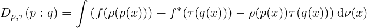

![I(θ) := [I (θ)], I (θ) := E [∂ l(x; θ)∂ l(x;θ)],
ij ij p(x;θ) i j](alpha-FIM0x.png)
The Fisher Information Matrix [1] (FIM) for a family of parametric probability models {p(x;θ)}θ∈Θ (densities p(x;θ) expressed with respect to a positive base measure ν) indexed by a D-dimensional parameter vector θ := (θ1,…,θD) is historically defined by
|
| (1) |
where l(x;θ) := log p(x;θ) is the log-likelihood function, and ∂i :=:  (by notational convention). The
FIM is a D × D positive semi-definite matrix for a D-order parametric family.
(by notational convention). The
FIM is a D × D positive semi-definite matrix for a D-order parametric family.
The FIM is a cornerstone in statistics and occurs in many places, like for example the celebrated
Cramér-Rao lower bound [3] for an unbiased estimator  :
:
where ≽ denotes the Löwner @artial ordering of positive semi-definite matrices: A ≽ B iff. A-B ≻ 0 is positive semi-definite. Another use of the FIM is in gradient descent method using the natural gradient (see [6] for its use in deep learning).
Yet, it is common to encounter another equivalent expression of the FIM in the literature [3, 1]:
 | (2) |
This form of the FIM is well-suited to prove that the FIM is always positive semi-definite matrix [1]: I(θ) ≽ 0.
It turns out that one can define a family of equivalent representations of the FIM using the α-embeddings of the parametric family. We define the α-representation of densities l(α)(x;θ) := kα(p(x;θ)) with
|
| (3) |
The function l(α)(x;θ) is called the α-likelihood function.
The α-representation of the FIM (or α-FIM for short) is
 | (4) |
In compact notation, we have Iij(α)(θ) = ∫ ∂il(α)∂jl(-α)dν(x) (this is the α-FIM). We can expand the α-FIM expressions as follows

The proof that Iij(α)(θ) = Iij(θ) follows from the fact that

since ∂il =  .
.
Therefore we get
and Iij(α)(θ) = E[∂il∂jl] = Iij(θ).
Thus Eq. 1 and Eq. 2 where two examples of the α-representation, namely the 1-representation and the 0-representation, respectively. The 1-representation of Eq. 1 is called the logarithmic representation, and the 0-representation of Eq. 2 is called the square root representation.
Note that Iij(θ) = E[∂il∂jl] = ∫
p∂il∂jldν(x) = ∫
∂ip∂jldν(x) = Iij(1)(θ) since ∂il = 
In information geometry [1], {∂il(α)}i plays the role of tangent vectors, the α-scores. Geometrically
speaking, the tangent plane Tp(x;θ) can be described using any α-base. The statistical manifold
M = {p(x;θ)}θ is imbedded into the function space ℝ , where
, where  denotes the support of the
densities.
denotes the support of the
densities.
Under regular conditions [3, 1], the α-representation of the FIM for α ⁄= -1 can further be rewritten as
 | (5) |
Since we have

it follows that
Notice that when α = 1, we recover the equivalent expression of the FIM (under mild conditions)
![(1) 2
Iij (θ) = - E [∇ logp(x;θ)].](alpha-FIM15x.png)
In particular, when the family is an exponential family [5] with cumulant function F(θ), we have

Similarly, the coefficients of the α-connection can be expressed using the α-representation as
The Riemannian metric tensor gij (a geometric object) can be expressed in matrix form Iij(α)(θ) using the α-base, and this tensor is called the Fisher metric tensor.
Gauge freedom of the Riemannian metric tensor has been investigated under the framework of (ρ,τ)-monotone embeddings [2] in information geometry: Let ρ and τ be two strictly increasing functions, and f a strictly convex function such that f′(ρ(u)) = τ(u) (with f* denoting its convex conjugate). Let us write pθ(x) = p(x;θ).
The (ρ,τ)-metric tensor ρ,τg(θ) = [ρ,τgij(θ)]ij can be derived [4] from the (ρ,τ)-divergence:
|

| (6) |
We have:

The second equation shows that there is a gauge function freedom ρ′(u)τ′(u) when calculating the (ρ,τ)-Riemannian metric.
Initially created 19th September 2017 (last updated April 14, 2021).
[1] O. Calin and C. Udrişte. Geometric Modeling in Probability and Statistics. Mathematics and Statistics. Springer International Publishing, 2014.
[2] Jan Naudts and Jun Zhang. Rho–tau embedding and gauge freedom in information geometry. Information geometry, 1(1):79–115, 2018.
[3] Frank Nielsen. Cramér-Rao lower bound and information geometry. arXiv preprint arXiv:1301.3578, 2013.
[4] Frank Nielsen. An elementary introduction to information geometry. arXiv preprint arXiv:1808.08271, 2018.
[5] Frank Nielsen and Vincent Garcia. Statistical exponential families: A digest with flash cards. arXiv preprint arXiv:0911.4863, 2009.
[6] Ke Sun and Frank Nielsen. Relative Fisher information and natural gradient for learning large modular models. In Doina Precup and Yee Whye Teh, editors, Proceedings of the 34th International Conference on Machine Learning, volume 70 of Proceedings of Machine Learning Research, pages 3289–3298, International Convention Centre, Sydney, Australia, 06–11 Aug 2017. PMLR.